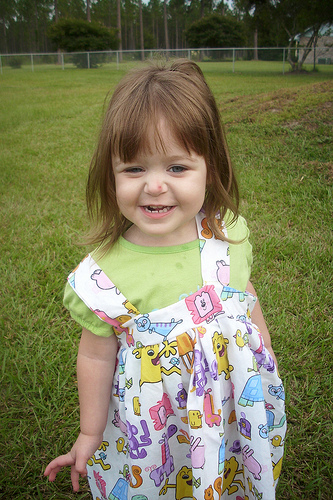
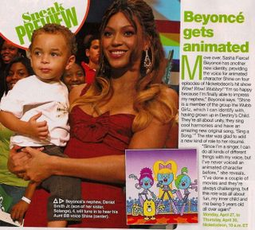

{kind=link}
{kind=link}
The hardest working string in show business.
Our friend Bob Boyle is the hardest working man in show business. He just released his first picture book last week --Hugo and the Really, Really, Really Long String-- and already he's done a commercial, and now, a music video, produced with our Wubbzy bubby Brad Mossman. Check it out, buy the book

Bob Boyle Releases A New Book!

Congratulations to our good pal, Bob Boyle. Along with the dream of creating his own TV series (a goal he’s achieved twice, with Wow! Wow! Wubbzy! and Yin! Yang! Yo!), Bob’s always wanted to publish his own kids’ books. Today, Random House and Bolder Books for Boys and Girls release his brand new book, Hugo and the Really, Really, Really Long String. Congratulations, Bob. This one’s been a long time coming.


The quick story behind Hugo is Bob showed us a couple of book projects back in 1922, it seems. One of those books, Flopsy, Mopsy, and Ted, later morphed into Wubbzy. The other was the then 64-page Hugo. We dug both real well, and showed them to our friends at Random House, who dug them real well, too. Actually, this was in 2003. To put in perspective how long he’s worked on this, Bob produced, and Nick Jr aired, 52 half-hours of Wubbzy since then. And, consider: the Empire State building was built in just thirteen months. Translation: Hugo stands taller than six Empire State Buildings stacked on one another. It’s that monumental.

In any case, if you enjoy Bob’s Emmy Award-winning art, and like the pages you see here, you really owe it yourself to own a copy of Hugo (buy a handful here on Amazon). Finally, watch this home-made promo Bob produced in his Southern California neighborhood.
Best of luck, Bob. We all hope Hugo’s a huge hit. - Eric

Fierce Fashions!

from Britney Marie
Did you know that you can buy Wubbzy fabric? It's totally true! Check out some of the awesome prints over at Fabric.com. Can you believe some of the adorable things that people are doing with these adorable fabrics? - Carrie
from Amybugsoriginalstyle
Wubbzy Fun Wherever You Go!

OK, folks, this is just too cool!
We visited with our friends over at Kick Design (who, among other things, designed the Wow! Wow! Wubbzy logo)the other day and they surprised us with this totally awesome Wubbzy App for iPhone and iTouch. It's so much fun - especially because you can play with your little yellow buddy wherever you go. And get this Moms and Dads - the game is fun for little ones AND big ones. So make sure you download it here (this will open a link to the iTunes store) and let us know what you think. There are more to come! - Carrie

{kind=link}
Wubbzy is "In Touch" with Beyonce!

Check it out! Our big Wow! Wow! Wubbzy! story was featured in In Touch magazine. - Carrie